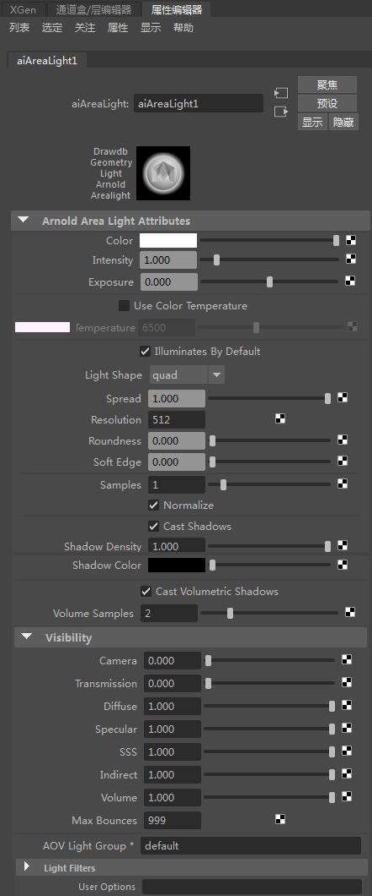
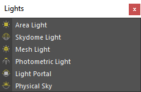
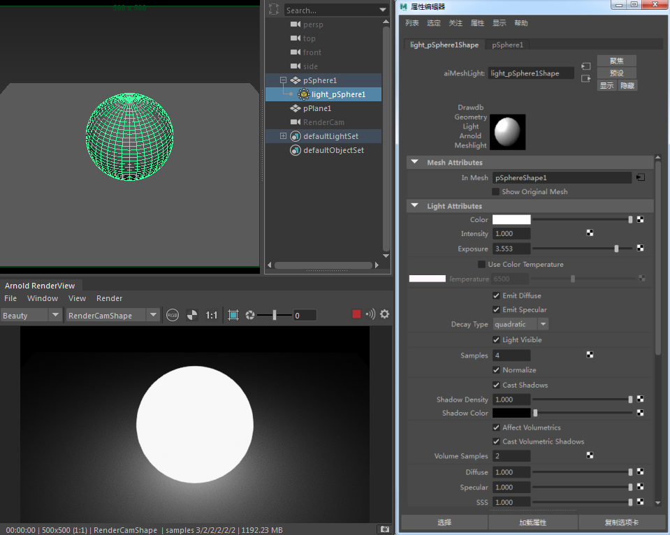
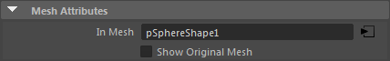

| 延伸阅读 |
|---|
| 请参见《Arnold 用户手册》中的灯光 |
| 《Arnold for Maya 用户手册》介绍了如何在 Maya 用户界面中设置 Arnold 灯光。《Arnold 用户手册》提供了有关 Arnold 灯光的完整文档。 |

使用 MtoA 渲染时，可以使用标准 Maya 灯光。如果选择灯光后检查 Maya 属性编辑器及常规灯光属性，还会看到一组新的 Arnold 灯光属性，可以从中访问 Arnold 使用的附加设置。
信息：有关灯光采样和去除噪波的详细信息，请单击此处。
Arnold 不支持恒定灯光衰退。但是，Arnold 的四边形 和圆盘 区域光有一个“扩散”(Spread) 参数，如果设置为较低的值，您将获得类似于恒定衰减的内容。同样，Arnold 中的 spot_light 有一个 lens_radius 参数，如果设置为非零值并使用较低的角度，您将获得衰退变缓的显著效果，类似于好莱坞式探照灯。另一种解决方法是使用远距离灯光/带方向性的灯光。

Arnold 中提供的内置灯光
可以通过两种方法在 MtoA 中使用 Arnold 区域光。您可以添加常规 Maya 区域光，在这种情况下，Arnold 将采用矩形/四边形光源，或者如果您需要不同的形状，可以将灯光节点类型更改为 Ai 区域光。请注意，Arnold 将在假设区域光是四边形的情况下进行渲染。如果您想要使用其他形状，则需要选择 Ai 区域光作为节点类型。Ai 区域光是一种自定义 Arnold 灯光，使用户能够根据不同的预设形状（例如四边形（默认形状）、圆盘和圆柱体）来创建逼真的照明效果。Arnold 区域光最重要的属性是“灯光形状”(Light Shape)。它指定区域光是默认的四边形（矩形）形状、圆柱体形状还是圆盘形状。这是您应该设置的第一个属性 - 选择与您连接灯光的几何体匹配的形状。
如果您只使用常规 Maya 区域光，而不是 Arnold Ai 区域光，那么选择四边形形状时，您可以使用“Arnold”选项卡下 Ai 区域光的所有控制属性（除了“灯光形状”(Light Shape)属性）。
模拟来自区域光源（由 4 个顶点指定的四边形）的灯光。它可用于对来自扩展光源（荧光灯条状灯光）或某些情况下来自窗户的灯光进行建模。
圆柱体灯光形状模拟来自圆柱形区域光源（管状）的灯光。增加圆柱体灯光大小将创建一个更大的区域光大小，因此将柔化垂直于圆柱体轴的阴影。圆柱体灯光的形状始终是圆形。无法通过缩放宽度来创建椭圆。
圆盘灯光形状模拟来自圆形区域光源（平面圆盘）的灯光。
要创建几何体灯光，请选择网格，然后转到“Arnold -> 灯光 -> 几何体灯光”(Arnold -> Light -> Mesh light)。此操作将创建一个单独的节点以表示几何体灯光光源，该光源引用形状节点，并且属性与常规灯光相同。该光源应在灯光编辑器、灯光链接编辑器等 Maya 窗口中可见。
有关 mesh_light 的场景示例，请单击此处。

当前使用 mesh_light 的限制包括：
目前仍然支持将网格参数“translator”更改为“mesh_light”，但将此种做法视为已弃用，并会在将来的版本中移除。

显示用作 mesh_light 的形状名称。
显示并渲染选择用于表示 mesh_light 的原始网格形状。
使光源对摄影机可见。
光度学灯光使用的是从真实世界灯光测量得到的数据，通常直接来自灯泡和灯罩制造商。
要下载具有 IES 数据图的 Maya 文件示例，请单击此处（IES 文件的路径需要编辑）。
这是来自远距离光源的平行光，根据方向向量而指定。通常用于模拟太阳光。
信息：Maya 中带方向性的灯光在其他软件中通常称为“远距离”灯光。
创建灯光引导口：
有关演示灯光引导口的简单场景，请单击[此处]。
尽管由于历史原因而称为“点光源”，但该灯光既可以模拟从（理论上的）点光源发出的灯光，也可以模拟从球体发出的灯光（后者在大多数情况下更加真实，产生的阴影也不如前者清晰）。灯光会在所有方向上均匀地投射。
此项用于模拟聚光灯发出的灯光，这是一束从光源发射到其指向点的圆锥形灯光。
此项用于模拟来自场景上方的球体或圆顶的灯光，表示天空。
请注意，仅当将 Maya 文件纹理与 Ai 天穹灯光结合使用时，Maya 视口中的“硬件纹理”(Hardware Texturing)才会起作用。例如，使用 Ai 图像会在视口中返回黑色。
Maya 视口中的天空大小。
颜色纹理贴图在视口中朝向的方向。可以设置为“前”(Front)、“后”(Back)或“两者”(Both)。
Arnold“灯光过滤器”属于任意着色器，它们可以基于距离、位置或其他因素修改灯光输出。因此，使用此类过滤器可以轻松地为内置光源增添附加效果。有 4 种灯光过滤器：
挡光板是连接到灯光开口侧面的不透明可移动面板，用于对光束形状进行进一步的控制。
gobo 过滤器用于将光束分成更自然的不规则图案（例如树叶等）。
light_blocker 过滤器将阻挡已连接灯光中以几何方式定义的任意区域。
有关示例着色器场景文件，请单击此处。
light_decay 过滤器指定灯光开始和结束位置的衰减范围。